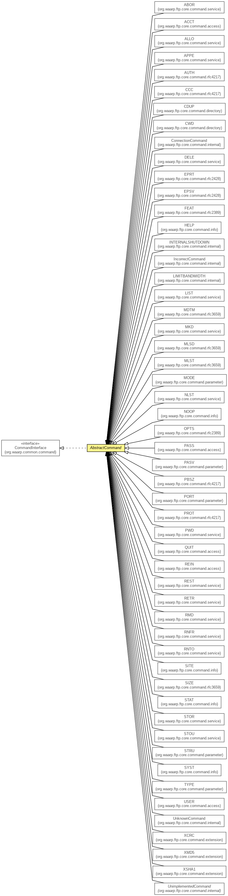

org.waarp.ftp.core.command
Class AbstractCommand
java.lang.Object
 org.waarp.ftp.core.command.AbstractCommand
org.waarp.ftp.core.command.AbstractCommand
- All Implemented Interfaces:
- org.waarp.common.command.CommandInterface
- Direct Known Subclasses:
- ABOR, ACCT, ALLO, APPE, CDUP, ConnectionCommand, CWD, DELE, EPRT, EPSV, FEAT, HELP, IncorrectCommand, INTERNALSHUTDOWN, LIMITBANDWIDTH, LIST, MDTM, MKD, MLSD, MLST, MODE, NLST, NOOP, OPTS, PASS, PASV, PORT, PWD, QUIT, REST, RETR, RMD, RNFR, RNTO, SITE, SIZE, STAT, STOR, STOU, STRU, SYST, TYPE, UnimplementedCommand, UnknownCommand, USER, XCRC, XMD5, XSHA1
public abstract class AbstractCommand
- extends Object
- implements org.waarp.common.command.CommandInterface

Abstract definition of an FTP Command
- Author:
- Frederic Bregier
| Methods inherited from class java.lang.Object |
clone, equals, finalize, getClass, hashCode, notify, notifyAll, toString, wait, wait, wait |
| Methods inherited from interface org.waarp.common.command.CommandInterface |
exec |
AbstractCommand
public AbstractCommand()
setArgs
public void setArgs(org.waarp.common.file.SessionInterface session,
String command,
String arg,
Enum code)
- Specified by:
setArgs in interface org.waarp.common.command.CommandInterface
setExtraNextCommand
public void setExtraNextCommand(Enum extraNextCommand)
- Specified by:
setExtraNextCommand in interface org.waarp.common.command.CommandInterface
isNextCommandValid
public boolean isNextCommandValid(org.waarp.common.command.CommandInterface newCommandArg)
- Specified by:
isNextCommandValid in interface org.waarp.common.command.CommandInterface
getObject
public Object getObject()
- Specified by:
getObject in interface org.waarp.common.command.CommandInterface
setObject
public void setObject(Object object)
- Specified by:
setObject in interface org.waarp.common.command.CommandInterface
getArg
public String getArg()
- Specified by:
getArg in interface org.waarp.common.command.CommandInterface
getArgs
public String[] getArgs()
- Specified by:
getArgs in interface org.waarp.common.command.CommandInterface
getValue
public int getValue(String argx)
throws org.waarp.common.exception.InvalidArgumentException
- Specified by:
getValue in interface org.waarp.common.command.CommandInterface
- Throws:
org.waarp.common.exception.InvalidArgumentException
getCommand
public String getCommand()
- Specified by:
getCommand in interface org.waarp.common.command.CommandInterface
hasArg
public boolean hasArg()
- Specified by:
hasArg in interface org.waarp.common.command.CommandInterface
getSession
public FtpSession getSession()
- Specified by:
getSession in interface org.waarp.common.command.CommandInterface
- Returns:
- the current FtpSession
getConfiguration
public FtpConfiguration getConfiguration()
- Returns:
- The current configuration object
invalidCurrentCommand
public void invalidCurrentCommand()
- Specified by:
invalidCurrentCommand in interface org.waarp.common.command.CommandInterface
getCode
public FtpCommandCode getCode()
- Specified by:
getCode in interface org.waarp.common.command.CommandInterface
- Returns:
- The FtpCommandCode associated with this command
Copyright © 2009-2012 Waarp. All Rights Reserved.